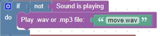

<H1>Play a sound only once</h1>
In order to play a sound continually, but only once at a time<br>
you need to check if the sound is currently playing<br>
If it is not playing, you can start it again<br>
<br>
<hr>

